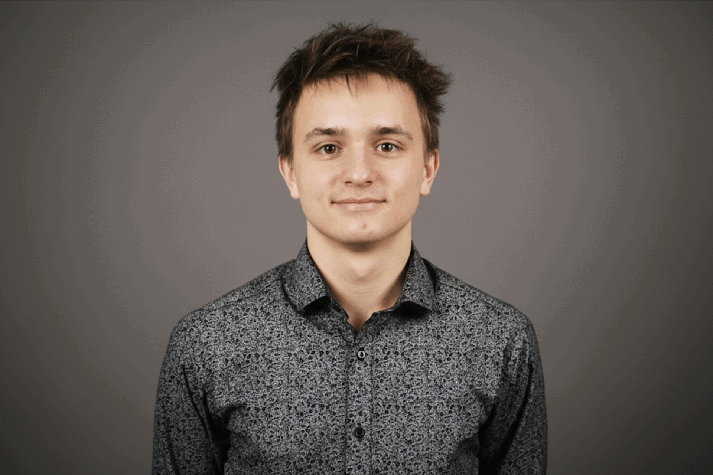

Kamil Štencel
Režisér / Kameraman / Editor
Tvůrce a vedoucí projektu. Střih, scénář a vizuální pojetí.
Projekty v přípravě a v plánu. Sledujte nás pro nejnovější obsah.
Tvůrce a vedoucí projektu
Režisér / Kameraman / Editor
Tvůrce a vedoucí projektu. Střih, scénář a vizuální pojetí.
Jsem videomaker, kameraman a začínající režisér, který se zaměřuje na vizuální příběhy s jasnou atmosférou a rytmem. Baví mě práce s kamerou, světlem a střihem tak, aby každý záběr měl smysl a podporoval emoci, kterou chci předat. Učím se s každým projektem a postupně si buduju vlastní styl založený na jednoduchosti, čisté kompozici a přirozeném vyznění.
Spolupracuji na menších filmových i komerčních projektech a vždy se snažím, aby výsledek působil profesionálně a autenticky.


Kreativci a technici, kteří stojí za každým projektem.
Asistent / Herec
Asistentství na set. Osvětlení, technika, přirozené herectví.

Asistent / Zvuk / Produkční
Produkční asistent. Řídí zvuk na setu, zajišťuje audio záznam a produkční chod projektu.
Kameraman 2
Druhá kamera, BTS záběry.